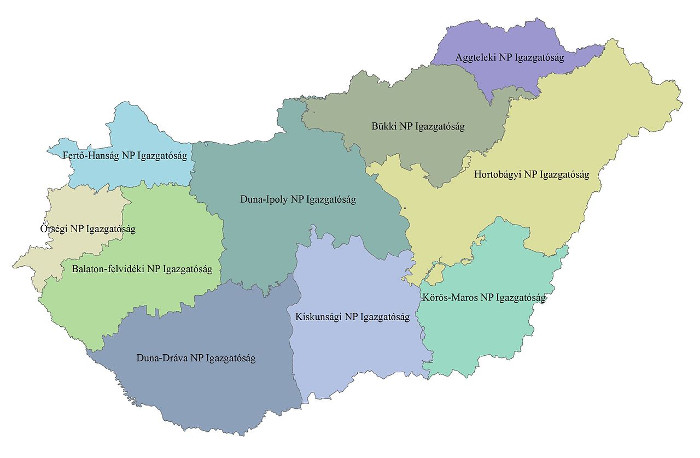

Mi a nemzeti park?
A nemzeti park a Természetvédelmi Világszövetség meghatározása szerint olyan terület, amelynek ökológiai egységessége megőrzendő a jelen és a jövő generációi számára; amely megvédendő mindenfajta mezőgazdasági és ipari hasznosítástól; és amelyen lehetőség nyílik nemcsak tudományos, hanem oktatási és szabadidős tevékenységek végzésére is.
Magyarország nemzeti parkjai
| Nemzeti park | Alapítás éve | Székhelye |
|---|---|---|
| Hortobágyi Nemzeti Park | 1973 | Debrecen |
| Kiskunsági Nemzeti Park | 1975 | Kecskemét |
| Bükki Nemzeti Park | 1977 | Eger |
| Aggteleki Nemzeti Park | 1985 | Jósvafő |
| Fertő–Hanság Nemzeti Park | 1991 | Sarród |
| Duna–Dráva Nemzeti Park | 1996 | Pécs |
| Körös–Maros Nemzeti Park | 1997 | Szarvas |
| Balatoni-felvidéki Nemzeti Park | 1997 | Csopak |
| Duna–Ipoly Nemzeti Park | 1997 | Budapest/Esztergom |
| Őrségi Nemzeti Park | 2002 | Őriszentpéter |